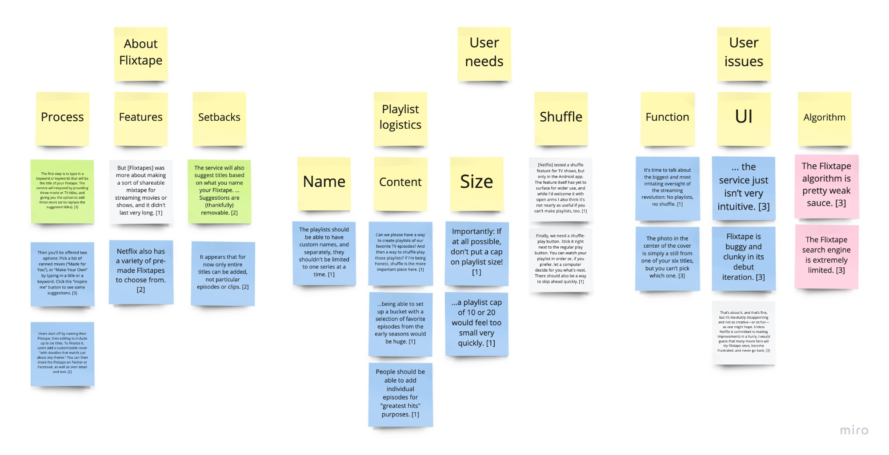
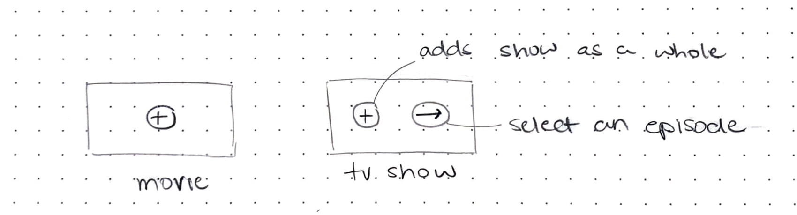
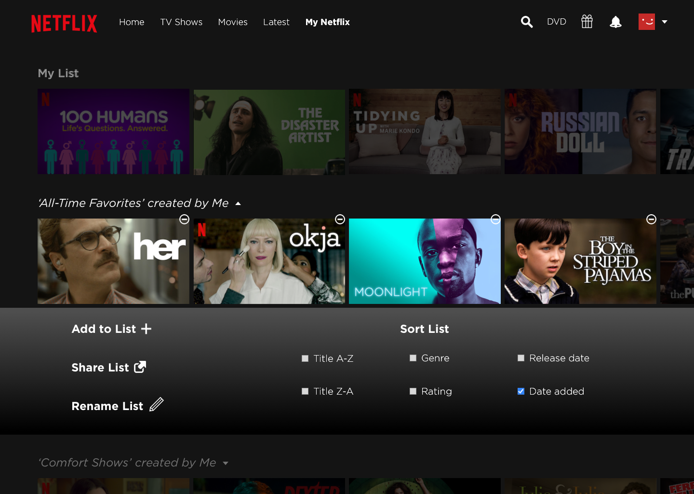

Flixtape
Reimagining Netflix's long-forgotten playlist service
Meet Flixtape... again
In 2016, Netflix introduced Flixtape, an in-app feature for compiling, personalizing, and sharing playlists of favorite movies and shows. The service was short-lived due to a limited search engine, inadequate cover art options, and too few titles. As a binge-watcher who understands the desire for a personal collection of my favorite programs, I set out to revive Flixtape in a way that still felt like Netflix.
Final design
User research
Because almost every trace of the original product has been scoured from the internet, I gathered several quotes from surviving reviews and articles. Using an affinity diagram, I sorted the data into three categories: About Flixtape, User Needs, and User Issues, which helped me figure out which components to drop, to change, or to accept as certain factors were out of my control. The requirements revealed themselves: unlimited titles per playlist, Netflix-made playlists, mixed-series episode playlists, the ability to shuffle playlists, and custom names and cover art.

Ideation and conceptual design
During ideation, I debated how Flixtape would complement the Netflix UI. How should playlists be represented? What should the playlist menu look like? How would I differentiate between adding a movie or series to a playlist versus adding a single episode?

My first iteration missed the mark - I did not allow for cover art, the playlist menu was too wordy, the sorting options were awkward, and my playlist-sharing model was confusing.

Reflection
The original Flixtape suggested names, content, and covers, leaving users to fill in the blanks, but the redesigned system gives people more autonomy and allows for independent playlist creation. I can see Flixtape evolving social features, where people could see what their friends are watching and how they rate titles, and even create joint playlists. Reviving Flixtape would provide a service no major streaming site currently offers.